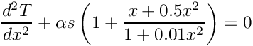
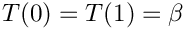
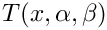
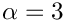

Here we provide a brief tutorial for using LOCA to perform a simple continuation using the Chan problem (see ChanProblemInterface). The code fragements discussed below can be found in ChanContinuation.C in the Chan subdirectory of the LOCA LAPACK examples directory.
The ChanProblemInterface implements a 1-D finite-difference discretization of the Chan problem:

subject to the boundary conditions . The parameters are , , , and , the size of the discretization. The scaling factor is used to test continuation at different scales of . Below we will track the solution  as is varied from to .
ChanContinuation.C Line by Line
#include "LOCA.H"
#include "LOCA_LAPACK.H"
#include "ChanProblemInterface.H"
To use LOCA in your code, you must always include the header LOCA.H. Since this is a LAPACK problem, we also include LOCA_LAPACK.H. Finally, we include the header for the Chan problem, ChanProblemInterface.H.
int main()
{
int n = 100;
double alpha = 0.0;
double beta = 0.0;
double scale = 1.0;
int maxNewtonIters = 20;
alpha = alpha / scale;
try {
Next we set up the basic problem parameters. maxNewtonIters is the maximum number of nonlinear solver iterations we wish to take at each continuation step. NOX and LOCA do throw exceptions (but only when serious errors occur), so all NOX and LOCA calculations should be placed in a try block.
// Create output file to save solutions
ofstream outFile("ChanContinuation.dat");
outFile.setf(ios::scientific, ios::floatfield);
outFile.precision(14);
// Save size of discretizations
outFile << n << std::endl;
Here we set up a file for saving the solutions computed at each continuation step. The printSolution method of the ChanProblemInterface is set up in such a way that if a file is provided, the current continuation parameter and solution vector are appended to the file, in addition to printing a portion of the solution vector to the screen. The format of this file is a series of rows, with each row containing numbers, the first is the continuation parameter with the remaining consisting of each component of the solution vector.
stepSizeList.set("Initial Step Size", 0.1/scale); // Should set
stepSizeList.set("Min Step Size", 1.0e-3/scale); // Should set
stepSizeList.set("Max Step Size", 10.0/scale); // Should set
Next we set up the LOCA parameters. We are setting up the problem to perform arc-length continuation in the parameter "alpha" from 0 to 5 with a maximum of 50 continuation steps and maxNewtonIters nonlinear iterations per step. Since we are doing an equilibrium continuation, we set the bifurcation method to "None". We use a secant predictor and adaptive step size control with an initial step size of 0.1, maximum of 10.0 and minimum of 0.001.
// Create the "Solver" parameters sublist to be used with NOX Solvers
Next we set up the NOX parameters. We use a simple full-step Newton method for the nonlinear solve at each continuation step (the default), and specify what output we want printed to the screen.
Implementation of the LOCA::Abstract::Factory for LAPACK groups.
Definition LOCA_LAPACK_Factory.H:27
We now create the LAPACK factory and the global data object. The factory is optional, and allows the use of LAPACK-specific strategies (e.g., the LAPACK eigensolver DGGEV). However the global data object is manditory. If no factory is provided, the second argument to createGlobalData is empty.
// Set up the problem interface
ChanProblemInterface chan(globalData, n, alpha, beta, scale, outFile);
int addParameter(std::string label, double value=0.0)
Adds a parameter to the list. Returns the index value assigned to the parameter.
Definition LOCA_Parameter_Vector.C:38
Next we instantiate the ChanProblemInterface and create a parameter vector to store the values of the problem parameters. Note that it is not necessary to put every problem parameter into the parameter vector, only those that serve as possible continuation or bifurcation parameters need to be supplied.
// Create a group which uses that problem interface. The group will
// be initialized to contain the default initial guess for the
Next we instantiate the LAPACK group with the Chan problem and then set the parameter vector in the group. From this point on, the LOCA::Stepper, via the LOCA::LAPACK::Group, will take care of setting parameters in the problem interface.
Various convergence tests based on the norm of the residual.
Definition NOX_StatusTest_NormF.H:78
Next we create appropriate status tests for the problem. For convergence at each continuation step, we require the extended (solution and parameter components) residual norm be smaller than 1.0e-8 and the number of nonlinear iterations be smaller than maxNewtonIters.
Lastly we copy the final solution out of the stepper, print out the final parameter list, close the output file, destroy the global data object, and catch any thrown exceptions.
After running the example and plotting the maximum of the temperature versus the continuation parameter at each step, we obtain the following continuation curve with two turning points:
Turning point bifurcations occur near and . For a tutorial on locating these turning point bifurcations and tracking them in the second parameter , see the LOCA Turning Point Continuation Tutorial.
The above plot was generated via MATLAB using the output file ChanContinuation.dat specified above. For those interested, the MATLAB commands used to generate this plot are shown below.
% open output file
fid = fopen('ChanContinuation.dat');
% read dimension of discretization
n = fscanf(fid, '%d', 1);
alpha = []; % array of continuation parameter values at each step
x = []; % array of solution components at each step